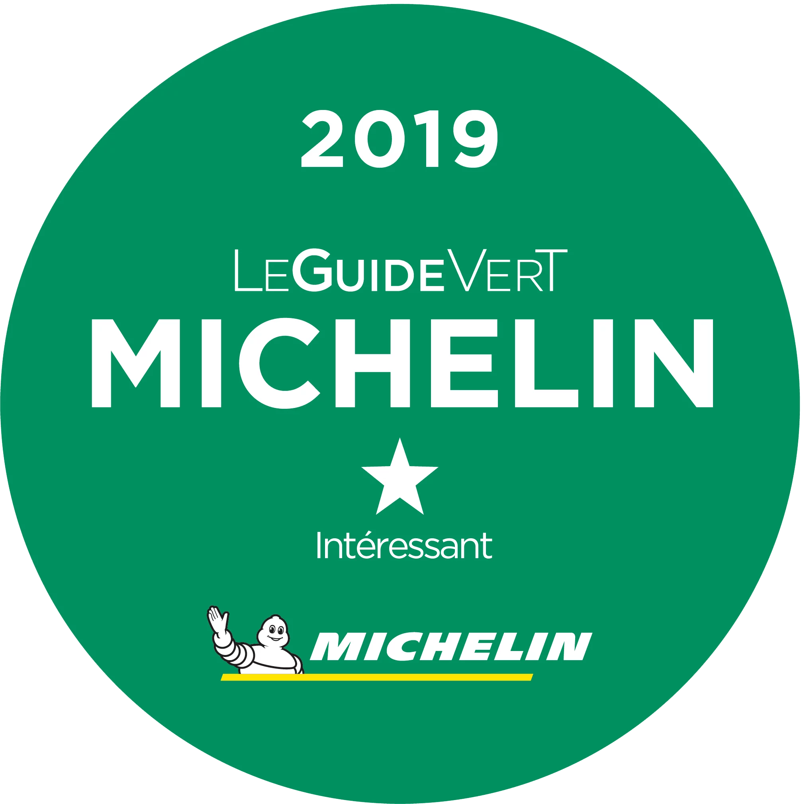
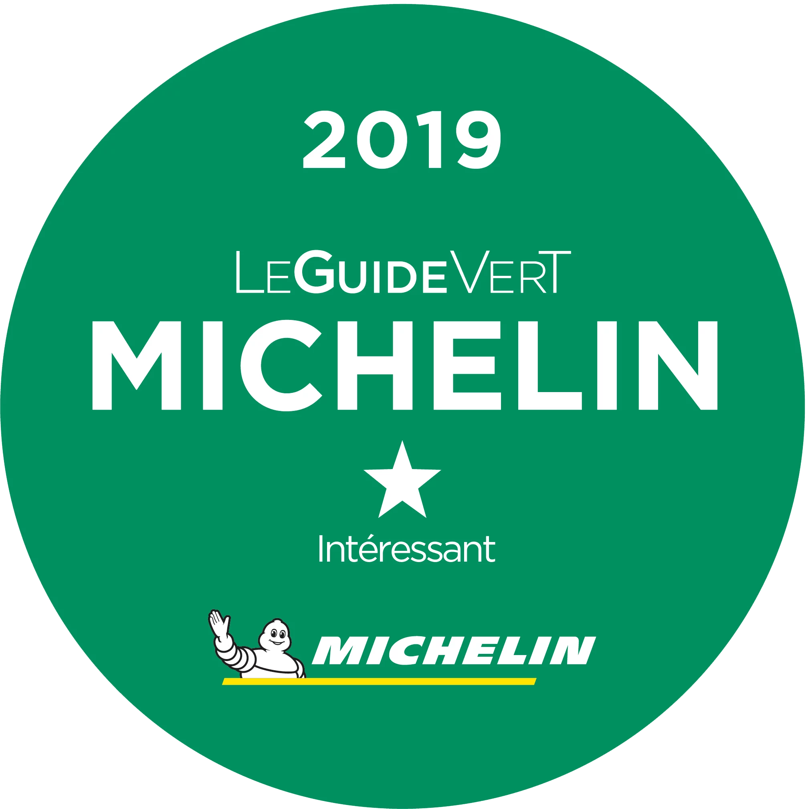

Historien om Trapholt går tilbage til 1930erne, hvor Gustav Lind, en
dansk tandlæge med praksis i Amsterdam, og hans kone købte store
arealer af Strandhuse-området ved det smukke Kolding Fjord. Her
byggede de en arkitekttegnet sommerresidens, tegnet af den
hollandske arkitekt A. P. Smits, og anlagde en stor æbleplantage og
en smuk have tegnet af C. Th. Sørensen.
Under 2. verdenskrig flyttede parret tilbage til Danmark og
sommerresidensen blev i 1945 ombygget til helårsbolig og fungerede
som ægteparrets hjem i mange år.
Da Gustav og Helene Lind kom
op i årene ville de sikre, at de mange tønder land i fremtiden
skulle tilgængeliggøres for folket. Derfor oprettede de i 1972
Trapholtfonden og forærede Kolding Kommune de mange tønder land. Til
gengæld forpligtede kommunen sig til at oprette et kunstmuseum på
Trapholt.
Den 2. juni 1988 kunne man åbne de smukke
museumsbygninger tegnet af arkitekterne Boje Lundgaard og Bente
Aude. Grundstenen i samlingen var oprindeligt Kolding Kunstforenings
værker.
I dag råder Trapholt over en samling på ikke mindre
end 7000 værker. Derfor har museets status af at være et
statsanerkendt museum, som modtager statstilskud til at indsamle,
registrere, bevare, forske og formidle museets samlinger.
Æblehaven 23
6000 Kolding
Telefon: +45 76 30 05 30
E-mail: kunstmuseum@trapholt.dk
Mandag:
Lukket
Tirsdag - søndag:
10.00 - 17.00
Onsdag:
10.00 - 21.00
Tilmeld dig vores nyhedsbrev og få nyt om udstillinger,
arrangementer
og tilbud fra Trapholt.
CVR: 11527132 EAN/ GLN: 5790002745249
 

© Trapholt 2021